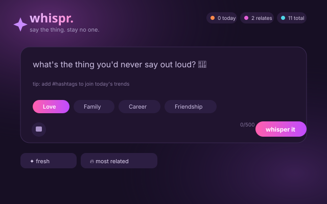

Work Whispr
Web app
Whispr
An anonymous confession platform where every account still verifies back to one real person.

Overview
Whispr is an anonymous confession board with a modern, youthful look. People post under a made-up name and avatar and never reveal their real identity, but each account still has to prove it belongs to one real, unique person. That keeps the space honest and stops it from being flooded with throwaway accounts.
Confessions are tagged by category and live hashtags, reacted to with “relate” instead of a like, and discussed in threaded comments. Trending hashtags are worked out from the last 24 hours of real activity, and enough community flags will hide a post until a moderator reviews it.
Highlights
- Sign in with Google or Discord, or with email confirmed by a 6-digit code.
- A short, deliberately vague profile adds personality without breaking anonymity.
- Follow requests unlock a private shared drawing canvas between two people, updated live.
- Send a 10–15 second clip of a real song that plays full-screen once and then disappears.
- Uploaded photos are scanned for faces and blocked, so avatars stay anonymous by design.
- Built with a small Node.js and Express back end, vanilla JavaScript on the front end and no framework or build step.